How Gods of the Arena numbers scale from level 1 to level 20
For James, before we design the fight, farm, and shop logic of the first James Botts policy. Every number comes from the content tables of the engine. A small program compiled against polyworld 1d7eb723 extracted them (the content file1 is byte-identical at the deployed 5422fb0c), model.py computes the derived values, and charts.py makes the figures from that dump2. This report stays in the lab. Do not post the spell-scaling finding in public.
Executive Summary
Only four hero numbers change with level: max HP, max mana, basic-attack damage, and move speed. Each grows by a fixed step per level that depends on the class1. Everything else is a constant for the whole match: attack speed, attack range, the damage, heal, mana cost, cooldown, and range of every ability, every item bonus, every consumable, the footman and tower stats, and every reward. Over 19 levels, HP grows 3.9 to 4.6 times, basic damage grows 4.5 to 5.6 times, mana grows 2.4 to 2.9 times, and move speed grows only 1.2 to 1.3 times. As a result, the balance of the game changes shape as heroes level. A basic-attack duel between two level-1 heroes takes 4 to 17 seconds, and the same duel at level 20 takes about the same time, because attacker damage and defender HP grow together. Spells do not grow. A level-1 ultimate removes a third to a half of the HP of an enemy hero, and the same ultimate at level 20 removes 7 to 12 percent (figure 9). By level 5 to 13, the full ten-second ability burst of every class has fallen below half of an enemy's HP. By then, basic attacks already give several times the sustained damage of the whole kit (figures 11 and 12).
The same fixed numbers cut both ways. Footmen keep 60 HP and 12 damage for the whole match. At level 1 a footman is a two- or three-hit kill and a real threat. By level 4 to 11 it is a one-hit kill and background noise (figure 15). Towers stay dangerous for longer. A gate tower kills a level-1 hero in 2 to 4 seconds and a level-20 hero in 7 to 14 seconds (figure 16). A lone hero needs about 170 seconds of basic attacks to take a gate at level 1, and 35 seconds at level 20 (figure 17). A +14 damage weapon is a third to two thirds of a hero's damage at level 1 and 7 to 14 percent at level 20. An elixir heals a quarter to a half of a level-1 hero and 6 to 13 percent of a level-20 hero (figures 18 to 20). Rewards are flat too, so a hero kill is worth 1.5 levels at level 1 and a tenth of a level at level 19 (figure 3). The practical shape is a game in three phases. Early, spells, potions, and cheap weapons decide fights, and creeps hurt. In the middle, levels and equipment take over. Late, the only things that still grow are basic attacks and HP, so every fight is a long basic-attack race that towers and heals decide.
1 · What scales and what does not
- Four per-hero numbers grow linearly with level: HP, mana, basic damage, move speed1.
- Nothing else in the game has a level term: abilities, attack cadence, range, items, consumables, footmen, towers, rewards.
- At level 20 the growth multiples are 3.9 to 4.6× for HP, 2.4 to 2.9× for mana, 4.5 to 5.6× for basic damage, and 1.2 to 1.3× for move.
The scaling functions are four one-line formulas: base + (level - 1) * perLevel for HP, mana, damage, and move1. refreshHeroStats applies the HP and mana growth at each level-up. heroAttackDamage and heroMoveSpeed read the damage and move values at the time of use, with equipment added3. Attack cadence and range are per-class constants with no level parameter (heroAttackTicks and heroAttackRange)1. Ability specs hold fixed damage, heal, restore, manaCost, cooldownTicks, range, and area values. The effective-spec function adds charge and recharge rules but no level term, and hitSpellTarget applies spec.damage without change1 3. Item bonuses are constants1. Footman HP and damage, tower HP, damage, and range, and the three reward pairs are constants in the simulation3.
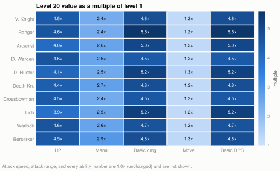
Basic DPS is damage times attacks per second, and attacks per second is fixed, so DPS has exactly the same multiple as damage. This one fact drives the rest of the report. Everything a hero does with its basic attack keeps pace with enemy HP. Everything a hero does with a spell or a potion does not, and neither does a threat the size of a footman.
2 · The level curve against the clock
- The XP to leave level L is
100 + (L - 1) × 75. Level 20 needs 14,725 XP3. - With one fifth of the team's creeps, a hero ends a 20-minute match at level 10. With a whole lane, level 12. With a lane plus a hero kill every two minutes, level 14.
- Only a hero that takes every creep on the map reaches level 20, at about minute 16.
Figure 2 shows the curve and four income scenarios from the economy report4 (a footman gives 25 XP, and 6 enemy footmen come per 240-tick wave per team3 5). The scenarios are rates, not plans. 3 XP/s is an equal five-way division of the team's creeps. 5 XP/s is every last hit in one lane. 6.25 XP/s adds one hero kill (150 XP) every 120 seconds. 15 XP/s is the theoretical maximum of all three lanes. The realistic band for a policy that farms well but shares is level 10 to 14 at the time limit. Levels 15 to 20 exist in the tables, but a match rarely reaches them. Thus the "late" phase in this report is about levels 10 to 14, not 20.
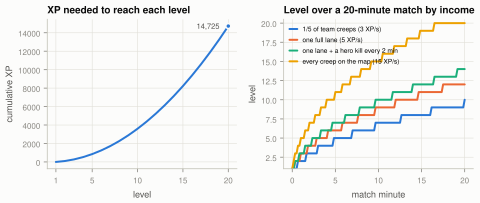
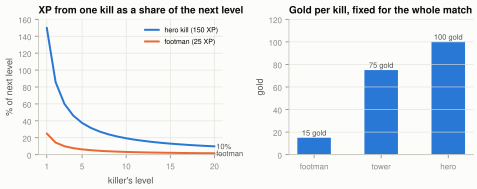
Rewards are constants, so their value in levels falls as 1 / (100 + (L - 1) × 75). A hero kill at level 1 is 150 percent of the next level. At level 5 it is 38 percent, at level 10 it is 19 percent, and at level 19 it is 10 percent. Gold does not lose value the same way, because item prices are also flat: 100 gold is always most of a Battle Axe. What loses value is the item itself (section 7).
3 · Hero stats by level
- Melee classes have the most HP (Death Knight 350 to 1,528, Vanguard Knight 330 to 1,470). Mages have the least (Lich 185 to 717, Arcanist 190 to 760).
- Basic DPS at level 20 goes from 90 (Druid Warden) to 248 (Demon Hunter). The order almost does not change across levels, because growth is proportional.
- Move speed is 2.3 to 3.0 tiles per second at level 1 and 2.7 to 4.0 at level 20. Ranger Boots (+0.32 tiles/s) are worth about ten levels of movement.
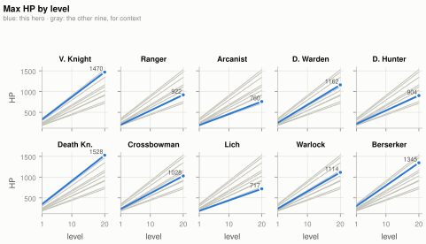
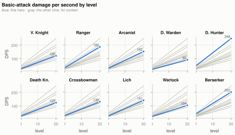
The full per-level table is Appendix A. The panels show two things. First, the gap between the best and the worst basic DPS grows only from 2.4× at level 1 to 2.7× at level 20 (Demon Hunter against Druid Warden), and the order changes only once (Lich passes Crossbowman at level 4), so class matchups do not turn around with level. Second, HP and damage both grow, so the ratio of a hero's own DPS to its own HP is almost flat. A hero can always kill a copy of itself in about the same number of seconds (section 4).
4 · Hero against hero: time to kill
- A pure basic-attack duel takes 4 to 17 seconds at level 1 and 3 to 17 seconds at level 20. The matrix almost does not change with level.
- The fastest killers are Demon Hunter and Berserker (3 to 7 seconds against any target). The slowest are Druid Warden and Warlock (9 to 17 seconds).
- Duels do not get shorter with level, but spells get smaller. Thus fights get longer relative to burst as the game goes on.
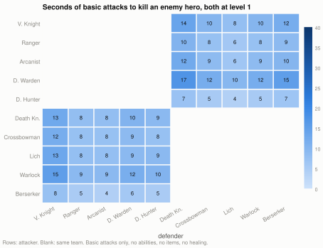
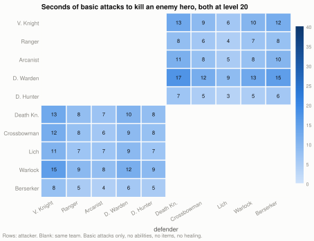
Time to kill is ceil(defender HP / attacker damage) × attacker swing ticks / 24, with no abilities, items, healing, or movement (Appendix B). The small change is arithmetic: HP and damage each grow about 4.5×, and the ratio moves only with the difference in per-class growth rates. In practice, a level-20 fight between two heroes with full HP lasts as long as a level-1 fight, but the level-20 fight has no burst in it. That is the mechanism behind the phase change. Early fights are decided by who lands an ultimate. Late fights are decided by who has more HP, more allies, or a tower.
5 · Abilities against level
- One cast of an ultimate is 33 to 53 percent of an enemy's HP at level 1 and 7 to 12 percent at level 20 (figure 9).
- A full ten-second burst with every charge falls below half of an enemy's HP at level 5 (Vanguard Knight) to level 13 (Crossbowman). The single strike of Druid Warden is never above a third (figure 12).
- Sustained ability DPS is 4 to 18 per second and flat. Basic DPS starts at 20 to 48 and reaches 90 to 248. Thus basic attacks do more damage than the whole kit from level 1, and 7 to 23× more at level 20 (figure 11).
- Mana grows more slowly than HP, and regeneration alone cannot pay for most kits cast on cooldown (figures 13 and 14).
5.1 Strikes as a share of enemy HP
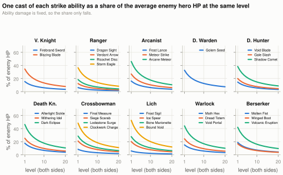
constant / (a + b × L).The average enemy HP is the mean over the five classes of the opposing team (Appendix B). At level 1 the ultimates of the Red team are the largest single hits in the game. Lich's Bound Void (125) is 53 percent of an average Blue hero, Crossbowman's Clockwork Charge (115) is 48 percent, and Death Knight's Dark Eclipse (110) is 46 percent. The best on Blue is Arcanist's Arcane Meteor (120), at 46 percent of an average Red hero. The primary strikes (40 to 50 damage, three charges) are 15 to 27 percent each at level 1, so three charges in a row kill a low-HP target. By level 10 the ultimates are 15 to 19 percent and the primaries are 5 to 8 percent. By level 20 every ability is below 10 percent, except the five largest ultimates at 10 to 12 percent.
The heal side (figure 10) has the same shape. Druid Warden's Kindred Wisps (80) heals a third of its own HP at level 1 and 7 percent at level 20. The self-heal passives (18 to 28) are 5 to 9 percent of own HP at level 1 and 1 to 2 percent at level 20. These fire on their own whenever the hero is below max, so late in the game their effect is small.
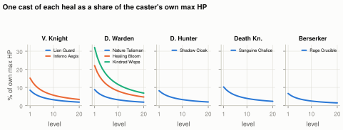
5.2 Sustained and burst damage
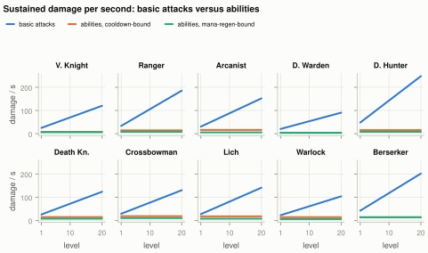
The orange line is the kit cast at its charge-limited rate without end: one cast per rechargeTicks per ability, 4 to 18 damage per second (Appendix A). It never crosses the blue line. Basic attacks win at level 1 for every class, and the gap only gets wider. The green line is lower again for eight classes, because a cast on every cooldown costs 5 to 12 mana per second and regeneration is 43. Only Druid Warden (3.4/s) and Berserker (2.7/s, Molten Fist is free) can keep their kits going on regeneration alone (figure 14).
Burst is where abilities matter, and only early. Figure 12 counts the damage available in the first ten seconds of a fight with every charge full and mana ignored: three primary casts plus one cast of each other ability.
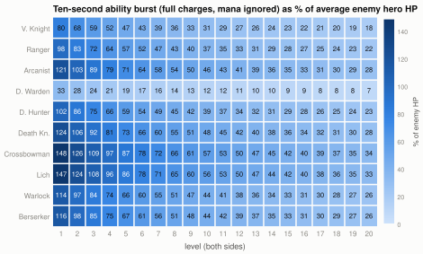
Seven classes can kill an average enemy from full HP with abilities alone at level 1. Crossbowman and Lich can do it through level 3, and Death Knight through level 2. The 50 percent line, where a burst still decides a fight if the target is already hurt, comes at level 5 for Vanguard Knight, 7 for Ranger and Demon Hunter, 9 for Arcanist, Warlock, and Berserker, 10 for Death Knight, 12 for Lich, and 13 for Crossbowman. At the realistic end of a match (level 10 to 14, section 2), the burst of every kit is 25 to 50 percent of an enemy. The lone strike of Druid Warden is under 10 percent from level 3 on.
5.3 Mana
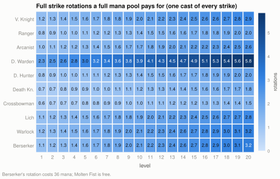
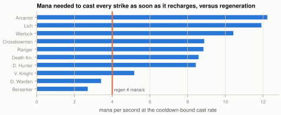
Mana grows 2.4 to 2.9× while costs are fixed, so the pool does get larger. Lich goes from 1.1 rotations at level 1 to 2.8 at level 20, and Arcanist from 1.0 to 2.6. But the rate does not change with level at all, because regeneration is a constant 1 mana per 6 ticks. A mage that opens with a full rotation at level 1 is then limited to what regeneration buys, which is a third to a half of its cooldown-bound output. A mana potion (60 mana for 45 gold) buys about two more primary casts or half an ultimate, and that does not change with level either.
6 · Footmen and towers against level
- A footman (60 HP) takes 2 or 3 basic hits at level 1. It takes 1 hit from level 4 (Crossbowman) to level 11 (Druid Warden) on (figure 15).
- A gate tower kills a hero in 2 to 4 seconds at level 1 and 7 to 14 seconds at level 20 (figure 16). Footman damage is 4.8 percent of average hero HP at level 1 and 1.1 percent at level 20.
- A lone hero needs 42 / 85 / 169 seconds of basic attacks for an outer / inner / gate tower at level 1, 15 / 30 / 60 seconds at level 10, and 9 / 17 / 35 seconds at level 20 (figure 17).
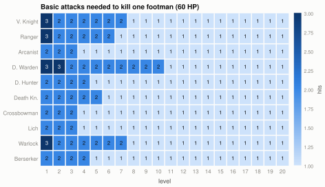
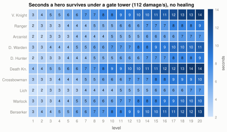
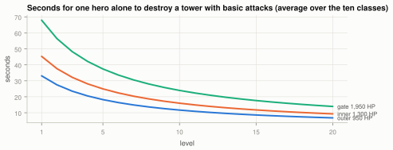
Footmen stop being a threat at about level 5, when their 12 damage is under 3 percent of any hero's HP. They stop costing time between level 4 and level 11, when they take one hit each. But they never stop being the economy: 25 XP and 15 gold each, unchanged. Towers are the opposite. Their HP is fixed, so a hero's time to take one falls with level. But their damage is also fixed, and it stays lethal. At level 10 an average hero survives a gate tower for six seconds, which is less than the 60 seconds it needs to kill it. A solo siege of a gate is impossible at any level without creeps to absorb tower fire, because towers target footmen before heroes3. With a wave in front, the hero's time to kill the tower is the limit, and that is what levels buy.
7 · Items and consumables against level
- A +14 damage item (Battle Axe or Rune Crossbow, 180 gold) is 33 to 64 percent of basic damage at level 1 and 7 to 14 percent at level 20 (figure 18).
- A +120 max HP item (Knight Armor, 160 gold) is 34 to 65 percent of HP at level 1 and 8 to 17 percent at level 20 (figure 19).
- A Vitality Elixir (+90 HP, 50 gold) is 26 to 49 percent of HP at level 1 and 6 to 13 percent at level 20. A Poison Potion (35 damage) is always 58 percent of a footman, and 14 to 3 percent of a hero (figures 20 and 21).
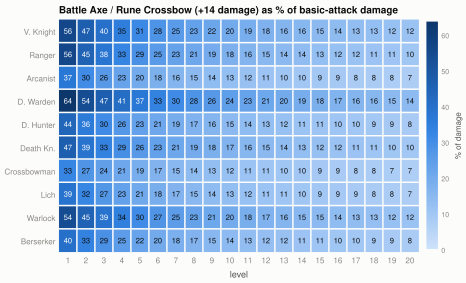
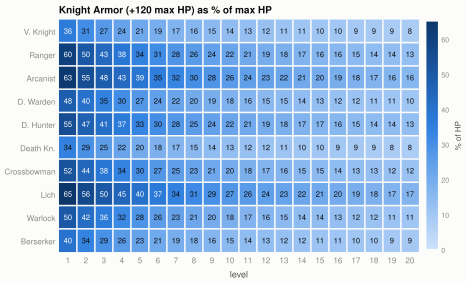
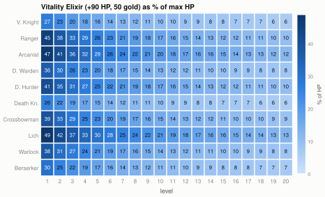
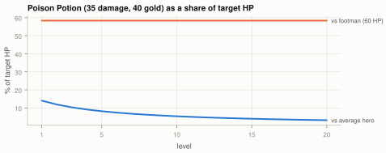
Items are one-time purchases with no upgrade paths. The purchase code rejects a duplicate and has no recipe logic3. Thus the value of an item is set at purchase, and every level then makes it smaller. The 150 starting gold, spent on Leather Gauntlets (+4) at tick one, is +16 percent damage for a Vanguard Knight at level 1 and +3 percent at level 20. The same 70 gold is almost nothing later. As a result, the order of purchases matters more than the total. Buy damage items first, while they are a large share. Buy HP items when fights become long basic-attack races. Buy consumables early, when 90 HP is a third of the bar and a poison is more than half of a footman.
Poison gets its own note. At 35 damage against a footman that never has more than 60 HP, it is a sure last-hit tool for the whole match, and a last hit is 25 XP and 15 gold. At 40 gold it does not pay for itself in gold, but in XP it is the cheapest level progress in the shop.
8 · Consequences for policy design
- The game has three phases keyed to level, not clock: burst (levels 1 to about 5), transition (about 5 to 10), and attrition (10 and up).
- Cast everything early, when a rotation is a kill. Late, treat abilities as a small bonus on top of basic attacks, and do not plan around them.
- Fight early when your burst is above the enemy's HP share and theirs is not. Fight late only with an HP, numbers, or tower advantage, because there is no burst to turn it.
- Buy damage first, HP later, and potions early. Farm creeps with the poison from level 1.
Burst phase (levels 1 to 5). Every ultimate is a third to a half of an enemy. Every kit can kill from full HP. Footmen do 5 percent of a hero per hit and take three hits to kill. A hero kill is worth a level or more. This is the phase where ability timing and target selection decide the game. It is also where the automatic cast rule (passive, then ultimate, secondary, primary, whenever there is a combat target) does the most harm, because it spends the ultimate on the first footman. A policy that keeps its ultimate for a hero and opens with it has a large, measurable advantage here, and only here.
Transition (levels 5 to 10). Burst falls through 50 percent, footmen become one-hit kills for most classes, and the +14 weapon is still 15 to 30 percent of damage. Fights start to depend on who has more HP and more allies. This is where equipment matters most, and where a policy must convert gold as fast as it comes in.
Attrition (level 10 and up). Ultimates are 10 to 19 percent of an enemy, sustained kit damage is a tenth of basic DPS, and the time to kill in a duel is the same as at level 1, with nothing to shorten it. Towers are still lethal in six to ten seconds and take a minute to kill solo. This is a game of HP pools, creep waves to absorb tower fire, and fights taken at a numbers advantage. Heals are small, so recovery after a retreat is about respawn timers and potions, not abilities.
Two class notes. Druid Warden is a healer whose heals stop mattering after level 5, and whose single strike is the weakest kit in the game. Its value is basic-attack DPS and 1,162 HP at level 20, not its abilities. Crossbowman and Lich have the largest bursts and keep them longest (above 50 percent until level 12 to 13). They are the classes whose ability use a policy must get right.
Appendix A · Per-hero numbers
Level 1 and level 20 values from the engine dump (specs.json)2. DPS is damage × 24 / attack ticks. Rotation mana is one cast of every strike. Sustained spell DPS is one cast per recharge per ability. Spell mana/s is what that costs.
| Class | HP L1–L20 | Dmg L1–L20 | DPS L1–L20 | Move tiles/s | Range | Atk/s | Rot. mana | Spell DPS | Spell mana/s |
|---|---|---|---|---|---|---|---|---|---|
| 0 Vanguard Knight | 330‑1,470 | 25‑120 | 25‑120 | 2.32‑2.78 | 1.17 | 1.00 | 90 | 7.8 | 5.2 |
| 1 Ranger | 200‑922 | 25‑139 | 33‑185 | 2.76‑3.44 | 5.50 | 1.33 | 130 | 14.4 | 8.8 |
| 2 Arcanist | 190‑760 | 38‑190 | 30‑152 | 2.48‑3.01 | 5.00 | 0.80 | 181 | 16.1 | 12.2 |
| 3 Druid Warden | 250‑1,162 | 22‑98 | 20‑91 | 2.56‑3.09 | 4.00 | 0.92 | 75 | 3.9 | 3.4 |
| 4 Demon Hunter | 220‑904 | 32‑165 | 48‑248 | 3.04‑3.95 | 1.25 | 1.50 | 109 | 15.4 | 8.4 |
| 5 Death Knight | 350‑1,528 | 30‑144 | 26‑123 | 2.28‑2.74 | 1.27 | 0.86 | 134 | 14.4 | 8.6 |
| 6 Crossbowman | 230‑1,028 | 43‑195 | 29‑130 | 2.40‑2.86 | 6.50 | 0.67 | 132 | 18.2 | 8.9 |
| 7 Lich | 185‑717 | 36‑188 | 27‑141 | 2.40‑2.86 | 5.50 | 0.75 | 188 | 17.4 | 11.9 |
| 8 Warlock | 240‑1,114 | 26‑121 | 22‑104 | 2.48‑3.01 | 4.50 | 0.86 | 156 | 13.8 | 10.4 |
| 9 Berserker | 300‑1,345 | 35‑168 | 42‑202 | 2.72‑3.40 | 1.33 | 1.20 | 36 | 13.8 | 2.7 |
Ability kits with effective values (the effective-spec function applied to the base ability specs1): the nine primary strikes (slot 1, except Druid Warden) have 3 charges, a 48-tick cooldown, and a 288-tick recharge per charge. Every other ability has 1 charge, with recharge equal to cooldown. Cast delays are 0 ticks for melee and projectile casts, 6 to 72 ticks for area casts. Per-ability damage, heal, mana, cooldown, and range are in the economy report's Appendix B4 and in specs.json.
Appendix B · Method and assumptions
- Source of numbers.
dump_specs.nimimports the game's content module and printsHeroSpecs, the effectiveabilitySpecfor every class slot, andItemSpecsas JSON2. No number was transcribed by hand. - Average enemy HP for a hero at level L is the mean of
hp(L)over the five classes of the opposing team, both sides at the same level. - Time to kill uses
ceil(HP / damage)hits at one hit perattackTicksticks, with no abilities, items, healing, or movement, and without the 45 percent swing offset. It measures relative scaling, not fight outcomes. - Sustained spell DPS is
Σ damage × 24 / rechargeTicksover strike abilities: the long-run rate after the charges are spent. Mana-limited spell DPS spends 4 mana per second on the strikes with the best damage per mana first, and ignores the pool. Ten-second burst counts all charges plus recharges in 240 ticks, with mana ignored. - Level over time applies a constant XP rate and the exact level thresholds. It ignores death time and the unit cap.
- Items are evaluated as a share of the level-scaled base stat without other items.
- Everything is deterministic from the dump, and
charts.pymakes every figure again2.
Appendix C · Sources
- examples/gods_of_the_arena/content.nim — class specs and per-level scaling, base and effective ability specs, item specs.
- .reports-working/gota-scaling-2026-09-15/
dump_specs.nim,specs.json,model.py,charts.py— the extraction, model, and figure code for this report. - examples/gods_of_the_arena/sim.nim — level curve, stat refresh, attack cadence, cast and charge mechanics, mana regeneration, tower and footman constants, rewards, purchase rules.
- gods_of_the_arena_lab/docs/leveling-economy.md — income rates and reward rules used in section 2.
- src/polyworld/configs.nim — default match length and spawn interval.